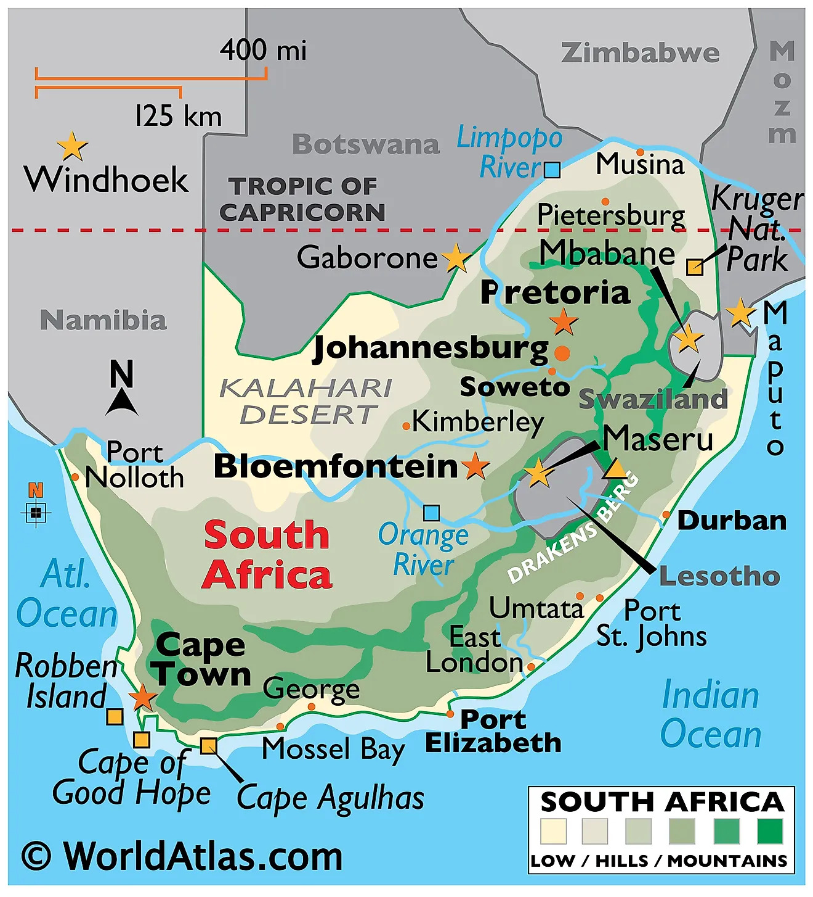
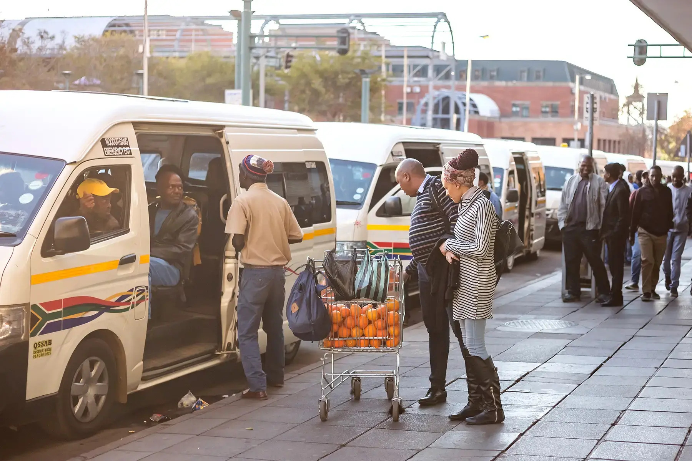

Travel & Tips
Visiting South Africa requires some practical planning. Check visa requirements based on your nationality, and ensure your passport is valid. Safety is important — stay aware of your surroundings and follow local advice.
Transport options include car rentals, domestic flights, and trains for long distances. The best times to visit depend on your interests: wildlife viewing is best during dry winter months, while coastal regions are ideal in summer.
Pack appropriately for the season and activities you plan. Respect cultural norms and etiquette, such as greetings and local customs, to have a safe and enjoyable experience.